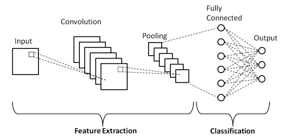
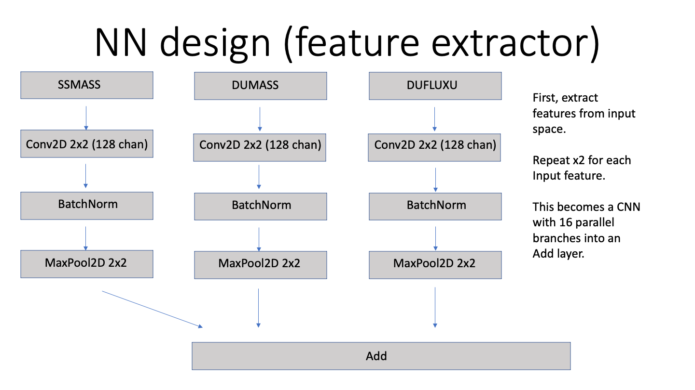
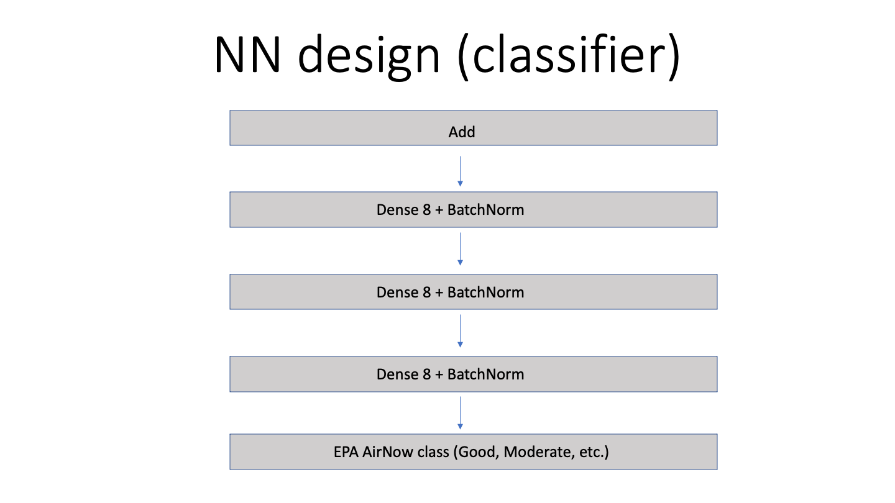

Open Classification of Regimes in the Southeast USA#
The U.S. Department of Energy (DOE) Office of Science’s AI for Earth System Predictability (AI4ESP) initiative looks to explore how various AI techniques can help improve our ability to analyze weather and climate data as well as how it can improve climate prediction. As a part of this initiative, Open Classification of Regimes in the Southeast USA (OpenCRUMS USA) is a seed effort to explore how AI can be used on reanalysis datasets to cluster reanalysis observations over U.S. DOE Atmospheric Radiation Measurement (ARM) sites. Having objective classifications of the aerosol and meteorological conditions over the ARM sites will help investigators by providing a labelled dataset for periods of interest to the investigator (i.e. polluted and pre-trough, etc.). With this, investigators studying aerosol-cloud interactions can look for cases with different aerosol loadings and synoptic forcing.
Of particular interest to OpenCRUMS USA are Houston, TX where the DOE TRacking Aerosol Cloud Interactions ExpeRiment (TRACER) took place during Summer 2022 as well as the ARM Mobile Facility deployment in the Southeastern United States that will commence in 2023. For the TRACER field experiment the U.S. DOE deployed the ARM Mobile Facility to Houston, TX with aerosol and meteorological measurement instruments. The primary focus of TRACER was to characterize the lifecycle of deep convection and its interaction with aerosols. The TRACER domain provides a natural laboratory for doing so by providing an environment favorable for isolated seabreeze convection to form off of the Gulf Coast to then enter the more polluted Houston region. The isolated nature of the convection allows for easier tracking of the convective lifecycle and the gradient of clean to polluted air as one moves inland into the Houston metro provides an aerosol perturbation. Therefore, this motivates OpenCRUMS to characterize potential aerosol regimes and sources. Since meteorological factors can influence both convective and aerosol properties, OpenCRUMS is also interested in exploring machine learning techniques for characterizing meteorological regimes over Houston and the Southeastern United States.
Aerosol regime classification.#
Input data#
The data in this notebook is the Modern Era Retrospective Reanalysis 2 from NASA. In particular, the data used here are the 2D aerosol products that are availaile in MERRA2. In order to download the data, click here.
Constructing the neural network#
Each input from the MERRA 2 model is an input to a parallel neural network that uses a Convolutional Neural Network (CNN) for each branch corresponding to an input to extract the relevant spatial features. CNNs are Neural Networks that are designed to extract relevant spatial features from multi-dimensional spatial data. They do so by extracting features on a sliding window in the domain and then storing those features in a lower-dimensional space as demonstrated in the figure below.

Diagram is Fig 1. of Phung and Rhee (2019).
These features are then concatenated together into a single representation that is a lower-dimensional vector representation of the input data.

These features are then an input to a classifier neural network that is composed of fully connected layers. The output of this layer is the EPA AirNow classification. 
Training#
The network was trained over 10 years of hourly MERRA2 aerosol inputs from 2010-2020. In total, 17 inputs were chosen for the CNN network. These inputs related to the mass and transport of the aerosol species available in MERRA2: Dust, sea salt, SO2, SO4, Organics, and Black Carbon column mass and horizontal fluxes.
References#
Phung, V.H.; Rhee, E.J. A High-Accuracy Model Average Ensemble of Convolutional Neural Networks for Classification of Cloud Image Patches on Small Datasets. Appl. Sci. 2019, 9, 4500. https://doi.org/10.3390/app9214500
Global Modeling and Assimilation Office (GMAO) (2015), MERRA-2 tavg1_2d_aer_Nx: 2d,1-Hourly,Time-averaged,Single-Level,Assimilation,Aerosol Diagnostics V5.12.4, Greenbelt, MD, USA, Goddard Earth Sciences Data and Information Services Center (GES DISC), Accessed: 20 Sept 2021, 10.5067/KLICLTZ8EM9D